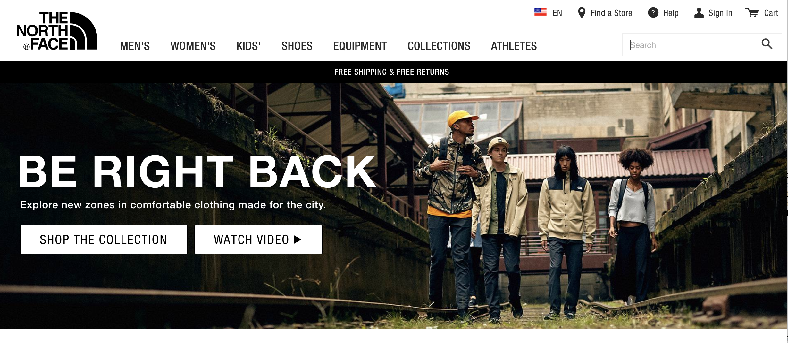
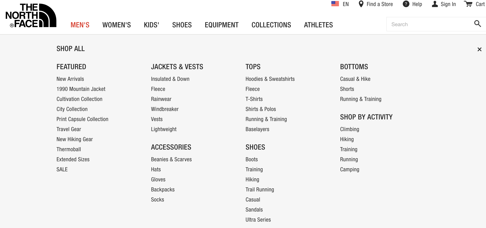
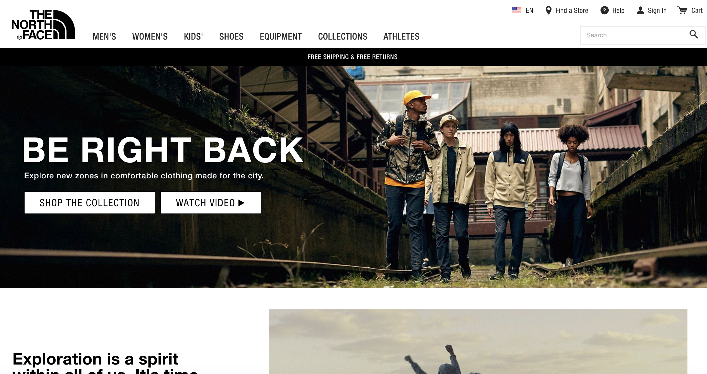
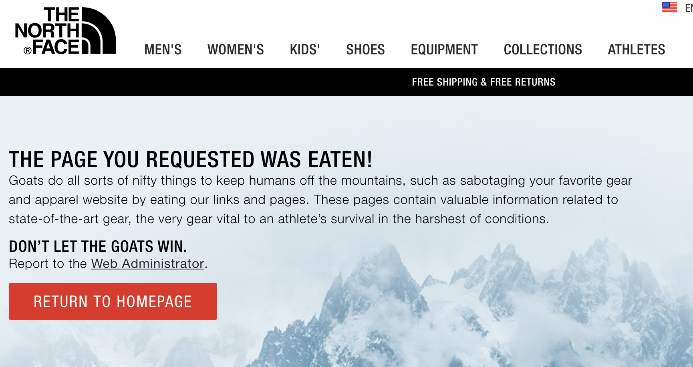

For my second post I would like to discuss the website for the high-end outdoor clothing company, North Face, thenorthface.com. One of the most important components of web design is clear navigation from the home page to all other pages and back, and an understanding of where you are on the website at any time. Although North Face has designed a website with a well-thought-out series of menus to help navigation, I feel some of their design choices, especially the title of their new clothing collection, are going to confuse potential customers.
My criteria for a good navigation system has been influenced by Steve Krug, author of "Don't Make Me Think", and usability.gov's guidelines "User Interface Design Basics". Links to both of these resources are found at the end of this article. The five questions both authors feel you should be able to answer at any time are:
- Whose page am I on? (site name)
- What page am I on? (page name)
- Can I find my way to what I am looking for? (clear consistent navigation)
- Is it easy to back up or go home?
- Where is the search button?
Navigation
I am going to start with the clarity and usefulness of top nav bar, pictured below.
 Northface.comAs you can see, the home page of the North Face website has a logo in the left-hand corner where you would expect it, a navigation menu across the middle, and utilities on the top right. Ignore what is below the top bar for now, we will get to the problematic header underneath it in a minute.
The North Face logo is the home button throughout the website, and although it is not labeled as such, I think more people know the logo is a good place to start. Each of the main menu items show in the middle portion, and all but the last of those items show a drop down menu on hover, see screen shot below.
 Northface.com, dropdownNavigating within the site.
Clicking on the first menu item, "Men's", notice that the title of the page selected has turned
from black to red (shown above), a good design feature. If you click on the Men's menu option,
the navigation also changes to reflect where you are, with a new secondary navigation bar that
identifies the page you are on and sub-menu's within it. This is a feature I particularly
appreciate in clothing websites because it makes it easy get where you want to go without
hunting through the large amount of items in the drop down.
 Men's menu option, North Face
Men's menu option, North Face
Clicking on the first option of the submenu, "Jackets & Vests", changes the sub-navigation to reflect where you are and where you have been. Where you are is in bold (see below).
 North Face, Men's Jackets & Vests.
North Face, Men's Jackets & Vests.
A new sub-menu appears below the last one to help you pare down what is being displayed, and arrows show each of these headers have drop downs. The only detail I would change in the way this page is displayed is to lower the font size of the first category of jackets listed, in this case, Rainware. This title is larger than any other text on the page and is only the first category of jackets shown, you can scroll down to see more but some users might miss this. The navigation system on the main page is consistent across the entire website.
Utilities
The top right of the navbar has the most common utilities requested: help finding a store, general help, a login in, a shopping cart, a button to choose a language, and a search field. All these utilities work except for changing the site language, I could not get the popup to function using either a Mac or in Windows.
The Header Problem
North Face's navigation system made it easy to know where I was and how to get to where I wanted to be. It is a terrible thing that all of the great web development that has gone into this website has been derailed by a unfortunate campaign headline given prominence on the page. Here is that header again so you do not have to scroll up.
 North Face, Be Right BackAs you can see, the largest text on the page are the words "Be Right Back". This text is larger than the logo and the menu items and my so my first impression of this website was that it was down and not functional. I have shown this page to a number of people and their response was the same. I would love feedback on this - does this text make you pause? North Face may have done this deliberately but somehow I don't think so. I will leave you with their 404 page which I inadvertently stumbled on when researching this website as it shows creativity and humor. "Don't let the goats win" could become the next viral meme.
 North Face, 404Resources:
Krug, Steve. Don't Make Me Think, Revisited : a Common Sense Approach to Web Usability. [Berkeley, Calif.] :New Riders, 2014.
usability.gov. User Interface Design Basics. Web. https://www.usability.gov/what-and-why/user-interface-design.html